| 07.06.2023 |
РЕГІОНАЛЬНИЙ СПІКЕР
Спікер регіонального онлайн-івенту для професійних спільнот учителів 5-6-х класів освітньої галузі «Фізична культура» «Нова українська школа: наступність переходу реформи від адаптаційного циклу до базового предметного навчання»
|
| 12.06.2024 |
РЕГІОНАЛЬНИЙ СПІКЕР
Спікер регіонального онлайн-івенту для професійних спільнот учителів 5-6-х класів освітньої галузі «Фізична культура» «Нова українська школа: наступність переходу реформи від адаптаційного циклу до базового предметного навчання»
|
| 21.08.2024 |
ОБЛАСНИЙ РІВЕНЬ
Виступ на обласному методичному дайджесті щодо організації освітнього процесу в 2024/2025 н.р., керівників професійних спільнот вчителів фізичної культури
|
| 04.06.2025 |
ІННОВАЦІЙНИЙ ДОСВІД
Виступ на регіональному онлайн-івенті для професійних спільнот учителів 5-7-х класів«Нова українська школа: впевнений старт на циклі базового предметного навчання» за освітньою галуззю «Фізична культура»
|
| 25.08.2025 |
ОБЛАСНИЙ РІВЕНЬ
Виступ на обласному методичному онлайн-дайджесті керівників професійних спільнот територіальних громад щодо викладання фізичної культури в освітніх закладах області у 2025/2026 н. р.
|
 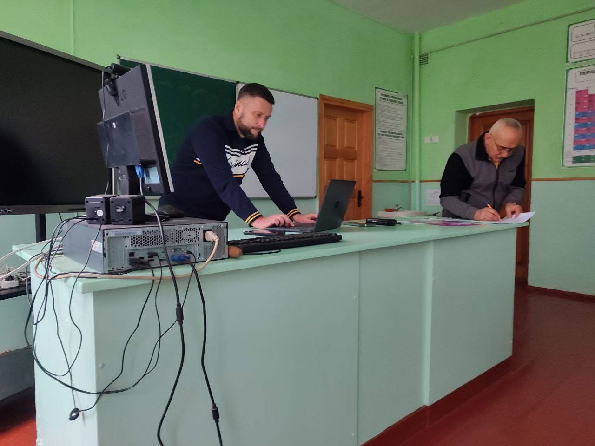
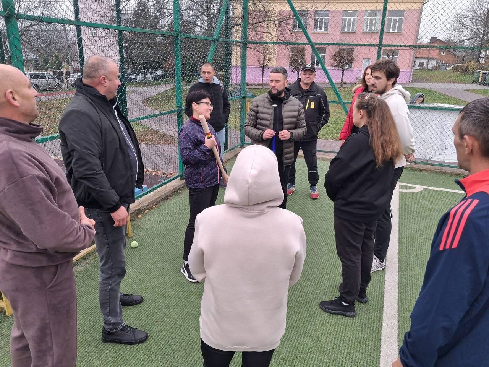
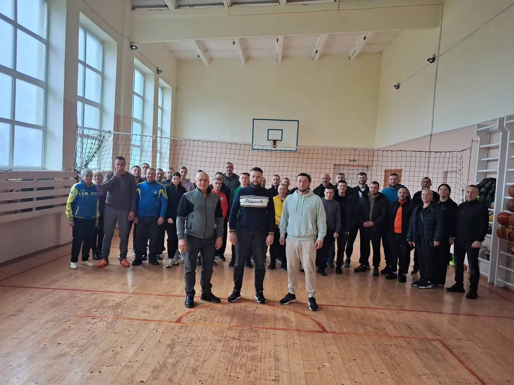
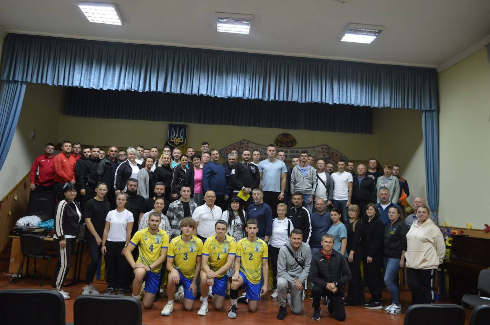
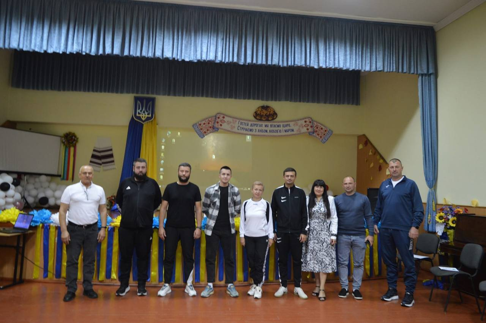
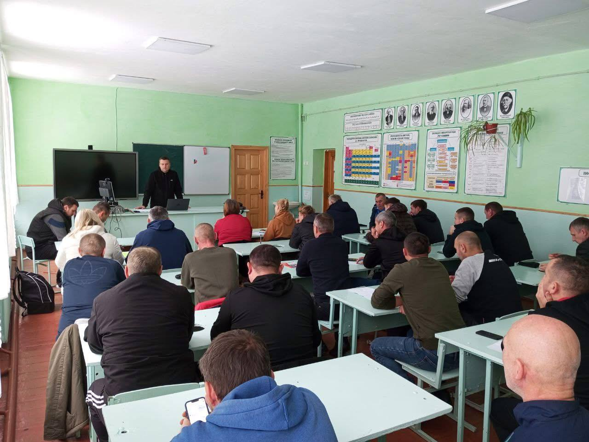
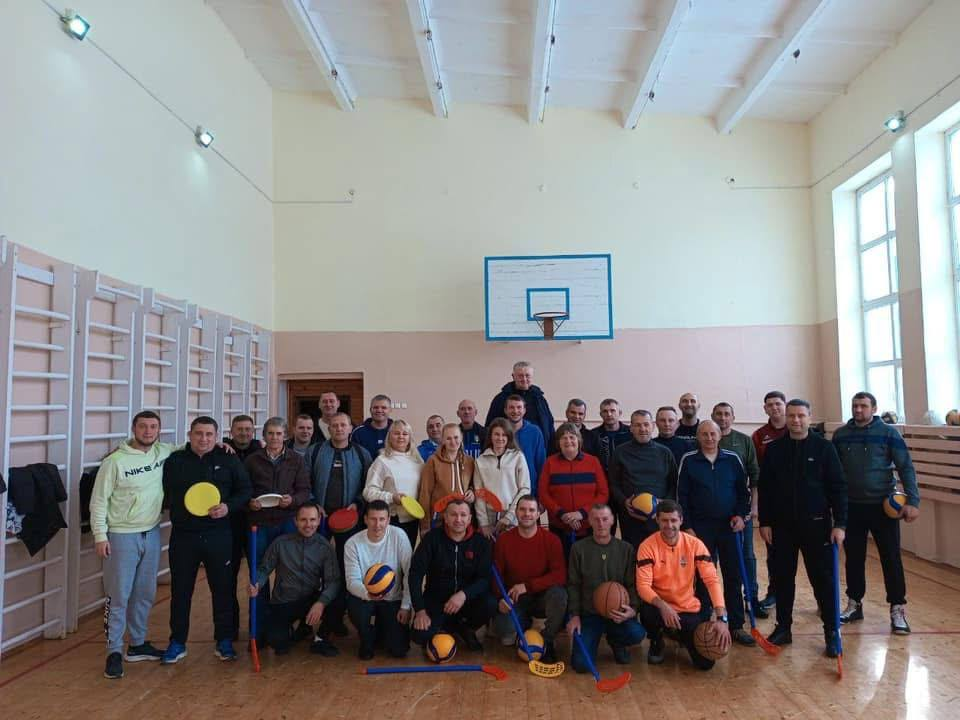
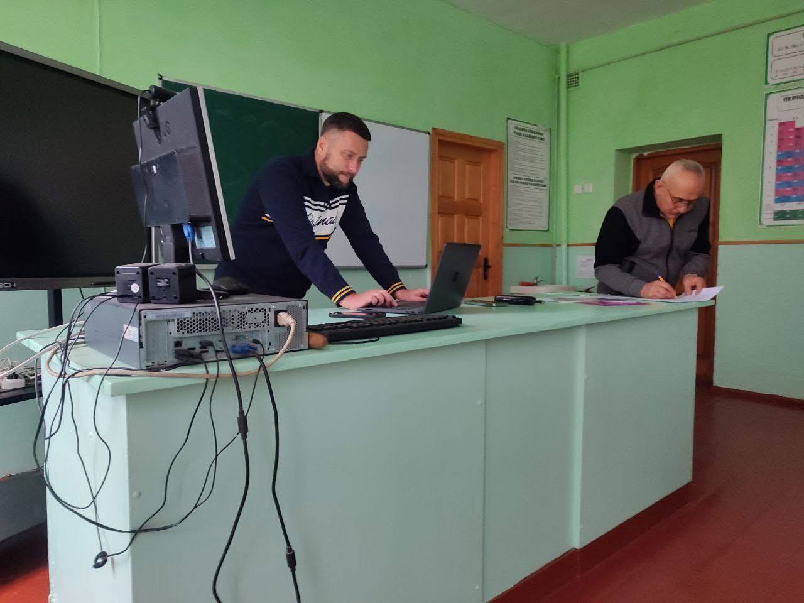
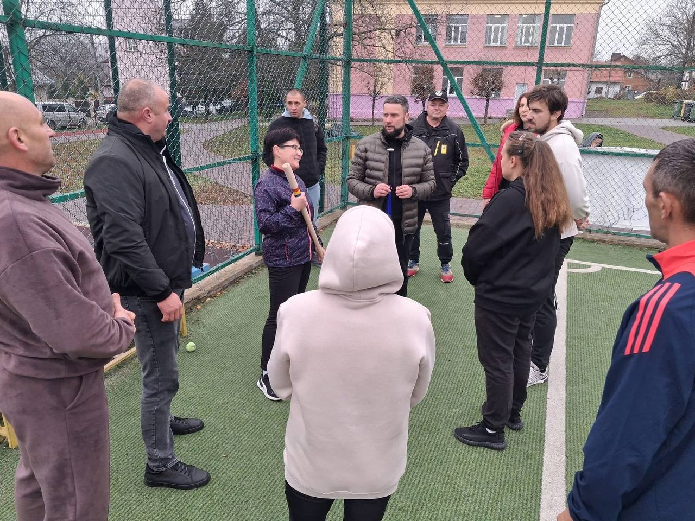
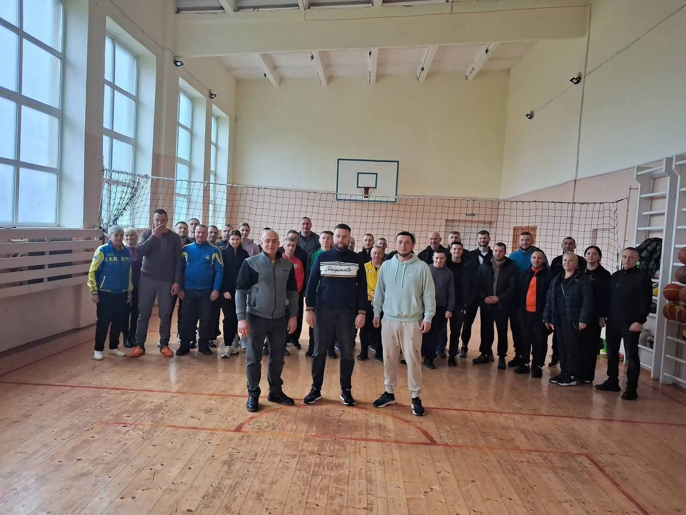
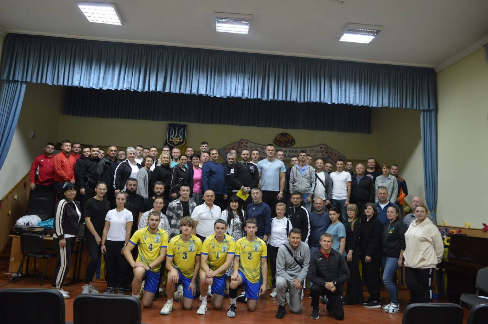
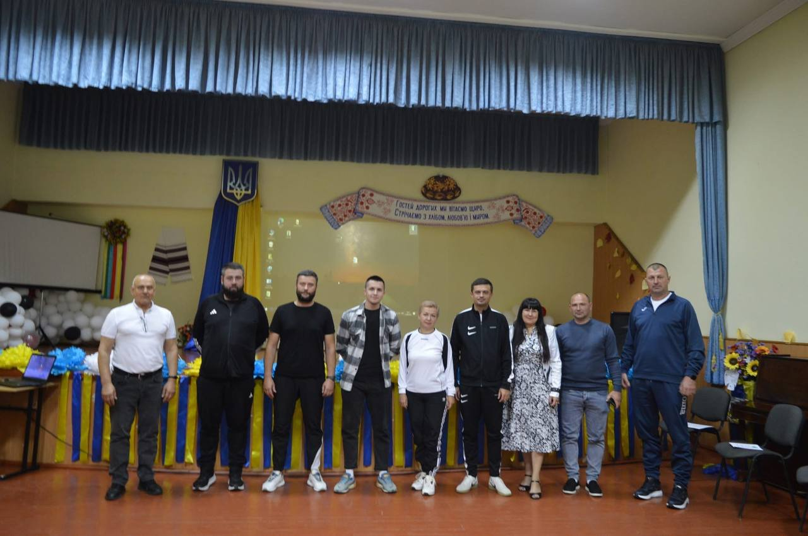
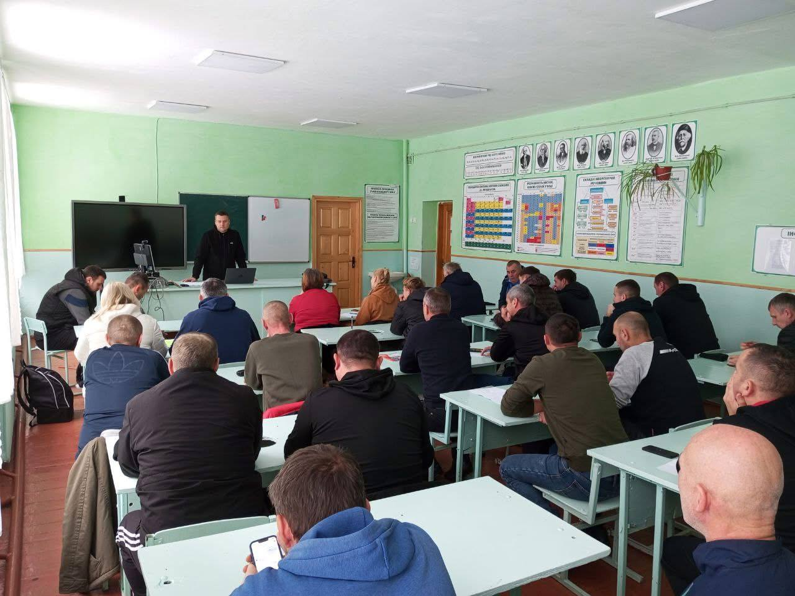
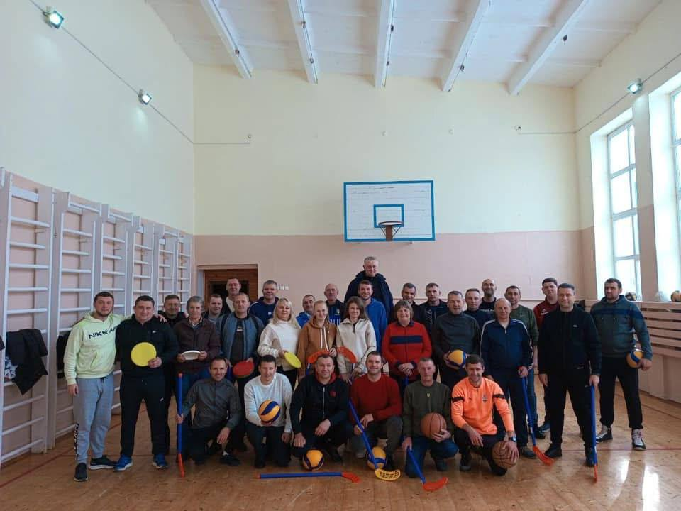